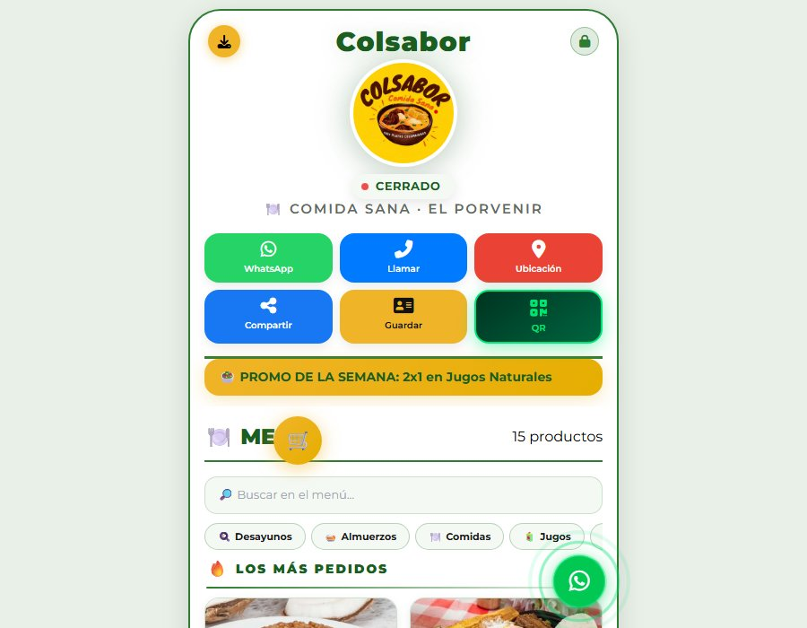

Colsabor — Comida saludable
Alimentación · Comida saludable · Menú digital
29 productos en el catálogo
5 secciones de menú
Pedidos con número y seguimiento
Antes: el menú en línea existía, pero con los 29 productos en precio 0 y la leyenda «Precio por confirmar» en cada plato.
Después: el negocio cargó los precios reales el 05/10/2026 y hoy administra su propia carta —precios, platos agotados, promoción y horario— desde un panel o desde Pages CMS, sin tocar código.
Ver proyecto en vivo